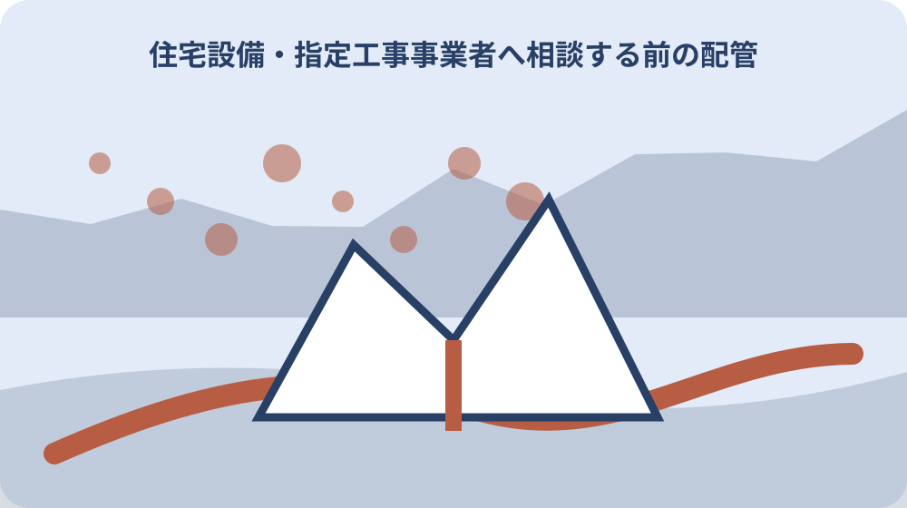

先に結論を確認する
この記事の答え：軽微な変更を除き、森町の現行名簿に掲載された指定給水装置工事事業者かを確認します。
森町で最初に照合する条件：相談対象の住所、メーター番号、口径、止水栓位置を現地で一件に結び付ける。
相談先は森町の現行名簿から選ぶ
確認の起点は森町公式名簿には事業所名、電話、所在地が並び、更新日は2026年1月5日です。指定給水装置工事事業者へ相談する前の配管情報整理では、別の資料から推測せず、該当する欄と確認日を一緒に残します。
この情報が必要になるのは町外の事業者も含まれるため所在地だけで指定の有無は決まりません。指定給水装置工事事業者へ相談する前の配管情報整理を家族や担当者と共有するときは、数字や固有名詞だけを抜き出さず、その数字が示す条件まで伝えます。
実際の手順は候補名を名簿で照合し、電話番号を公式欄から転記して工事範囲を伝えます。指定給水装置工事事業者へ相談する前の配管情報整理の記録には、確認した資料名、対象住所または商品、次に連絡する相手を一行で追記すると引継ぎが途切れません。
ここで止めて確かめたいのは広告や古い名刺の表記が現行名簿と異なる場合は、依頼を確定する前に町へ確認します。公式資料に書かれていない個別判断は未確認のまま区別し、町または表示責任者から回答を得た日付を後で足します。
メーター番号と13ミリなどの口径を写す
確認の起点はメーター蓋を開ける前に住所と設置場所を確認し、番号盤全体を撮影します。指定給水装置工事事業者へ相談する前の配管情報整理では、別の資料から推測せず、該当する欄と確認日を一緒に残します。
この情報が必要になるのは森町は13ミリ口径の交換断水を10分から20分程度と案内しています。指定給水装置工事事業者へ相談する前の配管情報整理を家族や担当者と共有するときは、数字や固有名詞だけを抜き出さず、その数字が示す条件まで伝えます。
実際の手順は番号、口径、撮影日を写真名とメモにそろえ、隣家のメーターとの取り違えを防ぎます。指定給水装置工事事業者へ相談する前の配管情報整理の記録には、確認した資料名、対象住所または商品、次に連絡する相手を一行で追記すると引継ぎが途切れません。
ここで止めて確かめたいのは泥や水で読めない表示を推測せず、読めない状態も写真に残して事業者へ伝えます。公式資料に書かれていない個別判断は未確認のまま区別し、町または表示責任者から回答を得た日付を後で足します。
症状を発生時刻と使用状況で分ける
確認の起点は濡れ、異音、水圧低下、使用量増加は別々の症状として発生日時を記録します。指定給水装置工事事業者へ相談する前の配管情報整理では、別の資料から推測せず、該当する欄と確認日を一緒に残します。
この情報が必要になるのは蛇口を閉じてもメーターが動くかという観察は、工事箇所の断定ではなく相談材料です。指定給水装置工事事業者へ相談する前の配管情報整理を家族や担当者と共有するときは、数字や固有名詞だけを抜き出さず、その数字が示す条件まで伝えます。
実際の手順はいつ、どの器具を使った時に変化したかを一日分だけでも時系列にします。指定給水装置工事事業者へ相談する前の配管情報整理の記録には、確認した資料名、対象住所または商品、次に連絡する相手を一行で追記すると引継ぎが途切れません。
ここで止めて確かめたいのは漏水場所を自分で掘って確定しようとせず、緊急性が高い流出は止水と連絡を優先します。公式資料に書かれていない個別判断は未確認のまま区別し、町または表示責任者から回答を得た日付を後で足します。
止水栓の位置と操作可否を確認する
確認の起点は森町は止水栓不良でメーター交換できない場合があると明記しています。指定給水装置工事事業者へ相談する前の配管情報整理では、別の資料から推測せず、該当する欄と確認日を一緒に残します。
この情報が必要になるのは止水栓が門、駐車場、植栽のどこにあるかは作業開始までの時間に直結します。指定給水装置工事事業者へ相談する前の配管情報整理を家族や担当者と共有するときは、数字や固有名詞だけを抜き出さず、その数字が示す条件まで伝えます。
実際の手順は蓋の位置を遠景と近景の二枚で撮り、固着や破損は操作せず伝えます。指定給水装置工事事業者へ相談する前の配管情報整理の記録には、確認した資料名、対象住所または商品、次に連絡する相手を一行で追記すると引継ぎが途切れません。
ここで止めて確かめたいのは町負担の交換と自己負担になり得る止水栓修理を同じ費用だと思わないことが大切です。公式資料に書かれていない個別判断は未確認のまま区別し、町または表示責任者から回答を得た日付を後で足します。
宅内と道路側の配管を一枚の略図にする
確認の起点は台所、浴室、トイレ、給湯器、屋外水栓を箱で描き、メーターからの順序を線で結びます。指定給水装置工事事業者へ相談する前の配管情報整理では、別の資料から推測せず、該当する欄と確認日を一緒に残します。
この情報が必要になるのは正確な竣工図がなくても、見えている配管と不明部分を線種で分ければ相談に使えます。指定給水装置工事事業者へ相談する前の配管情報整理を家族や担当者と共有するときは、数字や固有名詞だけを抜き出さず、その数字が示す条件まで伝えます。
実際の手順は増築部や離れへの分岐、井戸設備との接続有無を家族に聞き、回答者名も残します。指定給水装置工事事業者へ相談する前の配管情報整理の記録には、確認した資料名、対象住所または商品、次に連絡する相手を一行で追記すると引継ぎが途切れません。
ここで止めて確かめたいのは見えない地中管の経路を外構の形だけで確定せず、推定線と確認済み線を区別します。公式資料に書かれていない個別判断は未確認のまま区別し、町または表示責任者から回答を得た日付を後で足します。
過去の修理票と請求書を年代順に置く
確認の起点は修理年月、施工者、交換部品、保証欄は今回の症状との関連を検討する材料です。指定給水装置工事事業者へ相談する前の配管情報整理では、別の資料から推測せず、該当する欄と確認日を一緒に残します。
この情報が必要になるのは同じ場所の再修理か別系統かは、請求書の品名だけでなく写真と略図で照合します。指定給水装置工事事業者へ相談する前の配管情報整理を家族や担当者と共有するときは、数字や固有名詞だけを抜き出さず、その数字が示す条件まで伝えます。
実際の手順は紙を撮影し、個人情報を家族共有する範囲を決めて原本の保管場所を記します。指定給水装置工事事業者へ相談する前の配管情報整理の記録には、確認した資料名、対象住所または商品、次に連絡する相手を一行で追記すると引継ぎが途切れません。
ここで止めて確かめたいのは過去業者が現在も指定されているとは限らないため、新規依頼では現行名簿を再確認します。公式資料に書かれていない個別判断は未確認のまま区別し、町または表示責任者から回答を得た日付を後で足します。
所有者・使用者・支払者を別欄にする
確認の起点は空き家や賃貸では建物所有者、水道使用者、費用支払者が一致しないことがあります。指定給水装置工事事業者へ相談する前の配管情報整理では、別の資料から推測せず、該当する欄と確認日を一緒に残します。
この情報が必要になるのは工事の承諾をする人と現地立会いをする人を分けると、当日の連絡停滞を減らせます。指定給水装置工事事業者へ相談する前の配管情報整理を家族や担当者と共有するときは、数字や固有名詞だけを抜き出さず、その数字が示す条件まで伝えます。
実際の手順は三者の氏名、連絡先、希望連絡時間を記録し、見積承認者を明記します。指定給水装置工事事業者へ相談する前の配管情報整理の記録には、確認した資料名、対象住所または商品、次に連絡する相手を一行で追記すると引継ぎが途切れません。
ここで止めて確かめたいのは名義が不明なまま家族の一人を所有者と決めず、登記や契約資料で確認します。公式資料に書かれていない個別判断は未確認のまま区別し、町または表示責任者から回答を得た日付を後で足します。
町の担当区分に合わせて質問を分ける
確認の起点は森町では料金・開閉栓と、給水工事・量水器・水質で担当業務が分かれています。指定給水装置工事事業者へ相談する前の配管情報整理では、別の資料から推測せず、該当する欄と確認日を一緒に残します。
この情報が必要になるのは料金履歴の照会と施工方法の相談を一つの質問にすると、必要情報が伝わりにくくなります。指定給水装置工事事業者へ相談する前の配管情報整理を家族や担当者と共有するときは、数字や固有名詞だけを抜き出さず、その数字が示す条件まで伝えます。
実際の手順は開閉栓は上水道管理係、給水工事の技術事項は工務係という順で質問を整理します。指定給水装置工事事業者へ相談する前の配管情報整理の記録には、確認した資料名、対象住所または商品、次に連絡する相手を一行で追記すると引継ぎが途切れません。
ここで止めて確かめたいのは個別工事の見積額は町の一般案内からは決まらないため、指定事業者に現場条件を示します。公式資料に書かれていない個別判断は未確認のまま区別し、町または表示責任者から回答を得た日付を後で足します。
定期メーター交換と私有設備修理を分ける
確認の起点は対象メーターの定期交換費は町負担でも、漏水や止水栓不良の修理は自己負担になり得ます。指定給水装置工事事業者へ相談する前の配管情報整理では、別の資料から推測せず、該当する欄と確認日を一緒に残します。
この情報が必要になるのは同日に作業されても費用の根拠が異なるため、見積書では作業名を分けてもらいます。指定給水装置工事事業者へ相談する前の配管情報整理を家族や担当者と共有するときは、数字や固有名詞だけを抜き出さず、その数字が示す条件まで伝えます。
実際の手順は交換対象年度、町からの通知、事業者の作業票を一組で保管します。指定給水装置工事事業者へ相談する前の配管情報整理の記録には、確認した資料名、対象住所または商品、次に連絡する相手を一行で追記すると引継ぎが途切れません。
ここで止めて確かめたいのは無料という説明を宅内配管すべてに広げず、負担範囲を着工前に確認します。公式資料に書かれていない個別判断は未確認のまま区別し、町または表示責任者から回答を得た日付を後で足します。

軽微な変更か給水装置工事かを確認する
確認の起点は国の案内は単独水栓の取替えなどを軽微な変更の例として示します。指定給水装置工事事業者へ相談する前の配管情報整理では、別の資料から推測せず、該当する欄と確認日を一緒に残します。
この情報が必要になるのは蛇口周辺だけに見えても、配管切回しや材質変更を伴えば相談条件が変わります。指定給水装置工事事業者へ相談する前の配管情報整理を家族や担当者と共有するときは、数字や固有名詞だけを抜き出さず、その数字が示す条件まで伝えます。
実際の手順は器具名、接続方法、壁や床を開ける範囲を伝え、指定事業者が必要か質問します。指定給水装置工事事業者へ相談する前の配管情報整理の記録には、確認した資料名、対象住所または商品、次に連絡する相手を一行で追記すると引継ぎが途切れません。
ここで止めて確かめたいのは例外の名称だけで自己判断せず、予定する作業全体を町または事業者へ示します。公式資料に書かれていない個別判断は未確認のまま区別し、町または表示責任者から回答を得た日付を後で足します。
見積書で調査・修理・復旧を分ける
確認の起点は漏水調査、配管修理、掘削、床や外構の復旧は別工程です。指定給水装置工事事業者へ相談する前の配管情報整理では、別の資料から推測せず、該当する欄と確認日を一緒に残します。
この情報が必要になるのは金額だけを比べると復旧範囲や廃材処分の含有が見えなくなります。指定給水装置工事事業者へ相談する前の配管情報整理を家族や担当者と共有するときは、数字や固有名詞だけを抜き出さず、その数字が示す条件まで伝えます。
実際の手順は各工程の数量、材料、断水時間、保証、追加費用条件を同じ順で尋ねます。指定給水装置工事事業者へ相談する前の配管情報整理の記録には、確認した資料名、対象住所または商品、次に連絡する相手を一行で追記すると引継ぎが途切れません。
ここで止めて確かめたいのは現地未確認の概算を確定額として家族に伝えず、変更条件を見積書に残します。公式資料に書かれていない個別判断は未確認のまま区別し、町または表示責任者から回答を得た日付を後で足します。
大石の視点：売却前でも水道カルテを残す
確認の起点はここまでの制度説明は公式資料で確認できる事実で、物件ごとの配管状態は現地確認事項です。指定給水装置工事事業者へ相談する前の配管情報整理では、別の資料から推測せず、該当する欄と確認日を一緒に残します。
この情報が必要になるのは私は売却予定がなくても、メーター、止水栓、分岐、修理履歴を一枚にする価値があると考えます。指定給水装置工事事業者へ相談する前の配管情報整理を家族や担当者と共有するときは、数字や固有名詞だけを抜き出さず、その数字が示す条件まで伝えます。
実際の手順は境界際の管や隣地を通る可能性があれば、掘削前に図面と所有者の認識をそろえます。指定給水装置工事事業者へ相談する前の配管情報整理の記録には、確認した資料名、対象住所または商品、次に連絡する相手を一行で追記すると引継ぎが途切れません。
ここで止めて確かめたいのは私見を町の見解として扱わず、最終的な施工範囲は指定事業者と所有者が合意します。公式資料に書かれていない個別判断は未確認のまま区別し、町または表示責任者から回答を得た日付を後で足します。